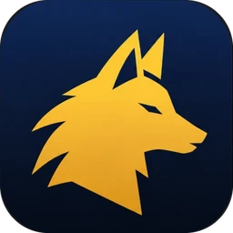

Pets e Genus Insight
Onde encontrar os pets, como farmar mais rápido, quando evoluir Genus Insight e o que bloquear nele.
Do vídeo de farm de pets e da planilha de atributos de Aragon (Global, 16 de outubro); a ordem dos pets e os círculos no nível 10 vêm de Fubgun. Cada bloco tem um link para o trecho correspondente do vídeo. AragonPlanilha de atributos de AragonFubgun
Por que farmar pets
Cada nível de pet adiciona atributos à conta inteira e XP a Genus Insight. Farme os pets primeiro — Insight vem depois e custa menos assim.

Aion 2 Pet Tracker Beta
Um aplicativo para Windows que acompanha o farm: registra os pets pelo menu do jogo, conta as almas coletadas durante o farm e exibe os pets procurados em uma sobreposição sobre o jogo.
- No Global, um pet chega ao nível 3 (na Coreia são 5). Cada nível adiciona atributos; o menu de pets mostra todos nos efeitos adquiridos. ▶ 1:09
- Cada nível de pet também concede XP de Genus Insight ao círculo correspondente — veja Genus Insight abaixo antes de gastar qualquer recurso.
Quais pets primeiro
- Pets Cogni primeiro no nível máximo: cada um concede +2 Critical Hit e +1 Might. Alguns só vêm de caixas — evolua todos os que puder farmar. Fubgun
- Pets Natura em seguida: cada um concede +1 Precision no nível máximo.
- Pets Fera e Varian não valem o tempo.
- Pets e Genus Insight são compartilhados por todos os personagens da conta — o progresso de um personagem secundário também conta.
Encontre o monstro do pet
O jogo indica onde se teleportar, não onde os monstros circulam. Um site de mapas, as zonas da outra facção e os nomes diferentes.
- Os marcadores Source do menu de pets indicam apenas o teleporte mais próximo dos monstros, não os pontos onde eles surgem. ▶ 4:08
- aion2pets.app/map mostra esses locais: procure o pet, e o mapa exibe todos os pontos registrados de surgimento dos monstros dele, com a imagem do monstro. Ainda não há pontos para todos os pets.
- Em um servidor cheio, os pontos podem ser disputados, e alguns pets têm poucos locais de surgimento.
- Os nomes nem sempre coincidem. Os Krall Warriors do mapa de Aragon se chamam Krall Test Subjects na zona deles — ainda assim fornecem almas do mesmo pet. ▶ 12:18
Pets no mapa da outra facção
- Alguns pets só existem no mapa da outra facção. Você chega lá pela Rift: quando ela abre, uma fenda roxa aparece no mapa — entre voando. O cronômetro de Rift no topo deste site mostra quando ela abre na sua região. ▶ 6:10
- Você tem uma hora lá (o cronômetro fica ao lado do minimapa). Fique longe dos guardas — eles matam você.
- Se morrer lá, você volta ao seu mapa e não consegue entrar de novo até a próxima abertura. Um Kisk colocado no mapa inimigo permite renascer lá.
Farme mais rápido
O limite diário de kinah, habilidades corpo a corpo que reiniciam ao abater um inimigo, uma configuração de mira e coleta automática.
- Monstros fornecem até 1,000,000 de kinah por dia. Farme pets até atingir esse limite — cerca de uma hora com uma build de fim de jogo, segundo Aragon — e pare até o dia seguinte. ▶ 2:23
- No caminho, você também consegue itens lendários e pedras de refinamento. Ambos vendem bem, pois os jogadores os consomem em Soulbinds. Joga totalmente de graça e sem o mercado? Guarde-os para seu próprio uso.
- Corpo a corpo: todo personagem de dano corpo a corpo tem uma habilidade cuja recarga reinicia ao abater um inimigo. Use-a para avançar de um monstro ao próximo — em um lugar com muitos monstros e poucos jogadores. ▶ 11:01
- Templar: Doom Shield com o nível 15 de stigma (reinicia a recarga ao derrotar um inimigo). Sem isso, Aragon não faria o limite diário com um Templar. Fragmentos de stigma vêm das lojas do Abyss, do Shugo Festival e da Nightmare Shop.
- Settings → Combat → Controls → Auto Target Upon Skill Use: ON enquanto qualquer monstro servir. Desative quando procurar o monstro de um pet específico e precisar manter esse alvo.
- Coleta automática: a Pet: Auto-Loot Voucher (30 Days) na loja, 500,000 de kinah com a assinatura (duas vezes por mês por personagem). Sem isso, você recolhe cada alma com F. ▶ 14:44
- Não farme ausente. Aviso de Aragon: repetir as mesmas ações sem comandos reais faz a conta ser sinalizada como bot. Um captcha aparece e, se você não responder, seu personagem vira uma criatura que outros jogadores podem matar, com o mercado bloqueado.
Cubos
A fonte mais rápida de cristais para Genus Insight — e fácil de deixar passar no mundo aberto.
- Um cubo fornece cerca de 1,000 cristais para Genus Insight; você o abre com uma chave. ▶ 12:59
- Encontre pelo som: Settings → Audio — desative tudo, exceto os efeitos sonoros, e aumente bastante o volume deles. Um cubo próximo emite um sinal sonoro; vá até ele e use uma chave.
- Sem pressa. Insight pode esperar até a maioria dos seus pets subir de nível. Mais tarde, menos jogadores ainda têm chaves, e os cubos ficam mais fáceis de encontrar.
Evento de Halloween: o baú de Halloween custa 250 moedas do evento (das missões de temporada) e dá uma skin e 10,000 cristais — o equivalente a 10 cubos. ▶ 14:15
Genus Insight
Quando evoluir, como refazer as linhas e o que bloquear em cada círculo.
Quando evoluir
- Não comece cedo demais. Só os níveis dos pets já levam um círculo a cerca de 8–9 (o 9 exige todos os pets daquele tipo, inclusive os do mapa inimigo). Gaste kinah e cristais depois disso. ▶ 5:32
- Evoluir Insight custa cristais arco-íris. Cubos fornecem esses cristais muito mais rápido que o farm de monstros — reserve cerca de 30–40 cubos para levar todos os círculos ao nível 10 e refazer suas linhas. Fubgun
- Primeiro, todos os círculos no nível 10. Com os cinco no nível 10, você desbloqueia o Unbound by Genus título (Depois do nível 45 → Títulos).
Refazer e bloquear linhas
- Refazer com Auto Analyze: marque os atributos desejados, ajuste a qualidade para Unique ou Heroic e inicie — o sistema refaz as linhas até obter uma das opções e então para. ▶ 7:20
- Bloqueie uma linha quando seu valor estiver próximo do máximo da faixa. Aragon mantém 2.3% em uma linha de dano; um Attack Bonus de 10 de um máximo de 16 fica desbloqueado.
- Bloquear três etapas: primeiro as linhas 1, 4 e 5; depois 3, 6 e 9; por último 2, 7 e 8.
| Linhas | Atributo (faixa) | Etapa |
|---|---|---|
| 1 e 5 | Attack Bonus 8–16 (ou Max Attack) | 1º |
| 4 | A linha de dano do círculo — próxima tabela | 1º |
| 3, 6 e 9 | Accuracy Bonus 20–40 (ou Critical Hit) | 2º |
| 2 e 8 | HP increase 0.8–1.6% | 3º |
| 7 | PvE Damage Tolerance 2–4% (Special: Damage Tolerance 1.5–3%) | 3º |
| Círculo | Linha 4 | Faixa |
|---|---|---|
| Cogni | PvE Damage Boost | 2–4% |
| Fera | Weapon Damage Boost | 1.5–3% |
| Natura | PvE Damage Boost | 2–4% |
| Varian | Front Attack Damage Boost | 1.5–3% |
| Special | Double Chance | 1.5–3% |
Por que não PvE Accuracy ou Front Attack
- Os atributos divinos multiplicam os atributos fixos: Might aumenta Attack, Freedom aumenta Accuracy e Precision aumenta Critical Hit. Aragon fez as contas — PvE Accuracy e Front Attack não recebem pontos deles. ▶ 9:49
- Por isso, ele prefere valores fixos de Accuracy, Critical Hit e Attack Bonus. Você ganha mais atributos divinos com o tempo (Pantheon), e as linhas de valores fixos crescem com eles.
Os círculos de Fubgun (personagem de dano, todos no nível 10) também mantêm as linhas PvE Accuracy e Front Attack quando aparecem — Aragon tentaria novamente. Na linha 4, eles concordam, exceto em Cogni (Fubgun: Damage Boost) e Varian (Fubgun: PvE Damage Boost). Tanques e curandeiros escolhem de outra forma; os guias de Templar e Cleric têm suas próprias linhas. Fubgun